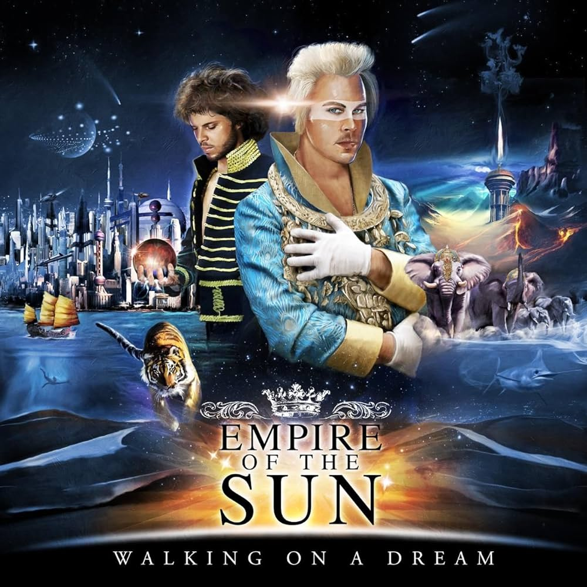

Álbumes Favoritos de Empire of the Sun
1. Walking on a Dream
- DNA
- Walking on a Dream
- Half Mast
2. Two Vines

Empire of the Sun es una banda de música electrónica originaria de Australia, formada en 2007. El grupo está compuesto por Luke Steele (de The Sleepy Jackson) y Nick Littlemore (de Pnau). Son conocidos por su estilo de música electro-pop psicodélico, sus visuales extravagantes y su enfoque artístico único.
La banda alcanzó fama internacional con su éxito "Walking on a Dream" en 2008, y desde entonces ha lanzado varios álbumes aclamados por la crítica. Su música mezcla sonidos electrónicos con influencias de la música pop y experimental.